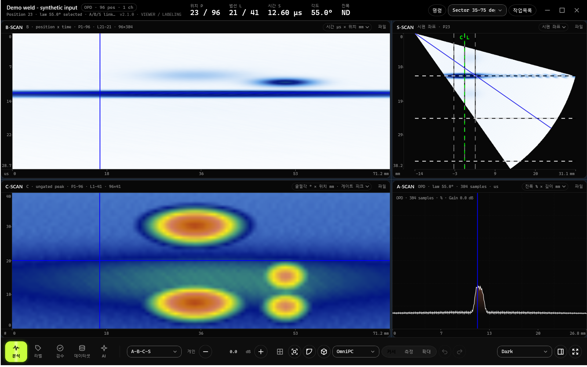
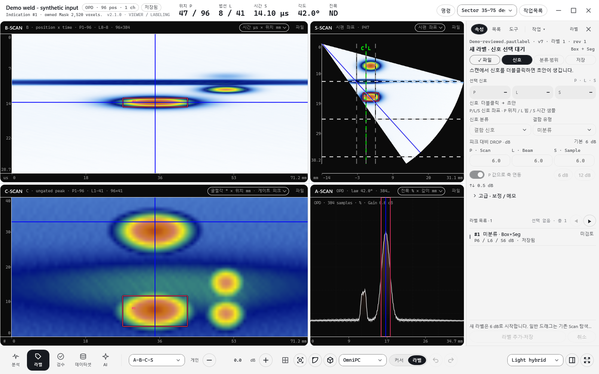

위치를 움직이면,
관점도 함께 이어집니다.
A-scan의 파형, B-scan의 단면, C-scan의 분포, S-scan의 각도를 한 위치로 연결합니다. 맨 위 계기줄은 위치·법선·시간·각도·진폭을 큰 숫자로 보여 줍니다.
하단 독에서 분석·라벨·검수·데이터셋·AI 모드를 바꾸고, 배치 프리셋과 타일별 축 단위(깊이, 음파 경로, 시간, 샘플)를 고릅니다.
위상배열 초음파 검사 데이터를 한 작업 공간에서 연결해 보고, 확인한 신호를 라벨로 남기는 Windows 앱입니다.

페이지를 내리면 실제 앱 장면이 이어집니다. 장면 버튼과 슬라이더로 원하는 화면을 직접 살펴보세요.
실제 앱에서 생성한 장면을 재생합니다. 브라우저에서 검사 데이터를 계산하거나 저장하지 않습니다.
A-scan의 파형, B-scan의 단면, C-scan의 분포, S-scan의 각도를 한 위치로 연결합니다. 맨 위 계기줄은 위치·법선·시간·각도·진폭을 큰 숫자로 보여 줍니다.
하단 독에서 분석·라벨·검수·데이터셋·AI 모드를 바꾸고, 배치 프리셋과 타일별 축 단위(깊이, 음파 경로, 시간, 샘플)를 고릅니다.
신호를 더블클릭하면 6 dB 기준의 초안이 생깁니다. 초안을 확인한 뒤 라벨 추가·저장을 눌러야 파일에 기록됩니다.
계기줄의 작업 상태 표시가 저장 대기와 저장됨을 구분합니다. 저장한 라벨도 검토 결정 전까지는 미검토입니다.
실제 3D 렌더러의 카메라를 움직여 얻은 장면입니다. 물리, S 적층, P/L/S 표현을 구분해 사용합니다.
세 표현은 좌표 의미가 다릅니다. 3D 표시는 교정된 결함 치수나 인증을 뜻하지 않습니다.
Gain과 컬러맵은 화면의 진폭 표현만 바꿉니다. 원본 표본과 측정값은 그대로입니다.
초안, 저장한 라벨, 검토 결정을 서로 다른 상태로 다룹니다. 저장은 항상 명시적인 버튼으로 합니다.
후보를 찾고 그 신호로 이동하는 데 씁니다. 별도 모델과 사용 동의가 필요하며 자동 승인은 없습니다.
같은 작업 공간을 Light와 Dark로 씁니다. 선택한 상태는 Dark에서 연두색으로, Light에서 진한 잉크색으로 표시됩니다.
두 그림은 같은 저장 장면을 앱이 두 테마로 렌더링한 것입니다.

지원 범위는 형식 버전과 취득 메타데이터에 따라 달라집니다. 시연은 별도로 만든 합성 입력을 사용합니다.
표시 Gain은 화면만 바꿉니다. 원본 신호는 그대로 남습니다.
AI 후보와 초안은 사람이 확인하고 저장하기 전까지 라벨이 아닙니다.
네. PAUT AI 2.1.0의 실제 Windows 앱 코드가 렌더링한 화면입니다. 공개용 합성 데모 입력을 사용했으며 현장 검사나 고객 데이터는 아닙니다. 생성형 이미지로 앱 화면을 그린 것이 아닙니다.
아닙니다. 이 페이지는 실제 앱에서 만든 장면을 탐색하는 제품 시연입니다. 슬라이더는 캡처된 장면을 고릅니다. 분석, 라벨 저장, 3D 계산은 Windows 앱에서 수행했으며 브라우저에서 다시 실행되지 않습니다.
연결된 A/B/C/S 스캔은 같은 취득 위치를 여러 관점으로 보여 줍니다. 물리 표현은 기하와 반사 경로를, S 적층은 섹터를 쌓은 공간을, P/L/S는 취득 인덱스 공간을 씁니다. 서로 같은 XYZ 좌표나 교정된 치수로 해석하면 안 됩니다.
공개 저장소에는 제품 소개 자료만 있습니다. 앱 소스는 비공개이며 설치 프로그램과 모델 가중치는 포함하지 않습니다. 연구용 AI 사용에는 별도 모델·실행 환경과 검사자의 검증이 필요합니다.
제품 소개 자료와 기술 범위 안내는 공개 저장소에서 볼 수 있습니다.
공개 소개 저장소 보기